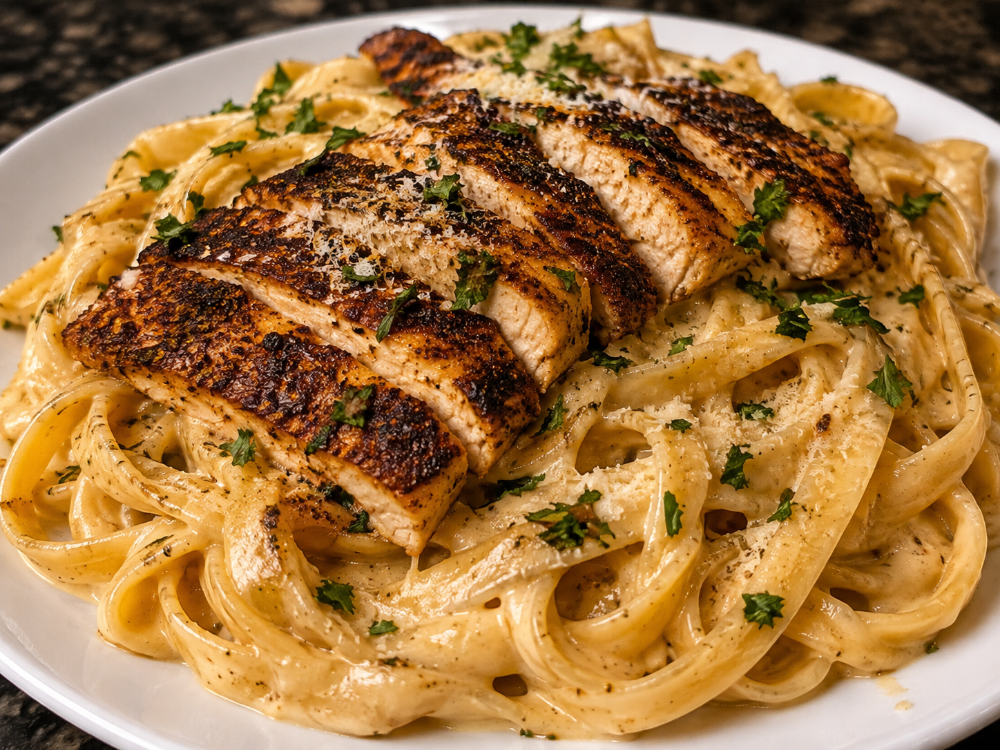

Blackened Chicken Alfredo

Blackened Chicken Alfredo is a creamy pasta dish topped with seasoned blackened chicken. It has a rich Alfredo sauce with a flavorful and slightly spicy chicken topping.
Difficulty: 3/5
Spiciness: 2/5
Recommended Season: Fall
Ingredients
- Chicken breast
- Fettuccine pasta
- Heavy cream
- Parmesan cheese
- Butter
- Garlic
- Blackening seasoning
- Salt and pepper
Instructions
- Cook the fettuccine pasta.
- Season the chicken with blackening seasoning.
- Cook the chicken until it is fully cooked and blackened on the outside.
- Make the Alfredo sauce with butter, garlic, heavy cream, and Parmesan cheese.
- Add the pasta to the Alfredo sauce and mix together.
- Slice the chicken and place it on top of the pasta.
Recommendation
Blackened Chicken Alfredo is a good choice for a dinner or a special meal when you want something with extra flavor.